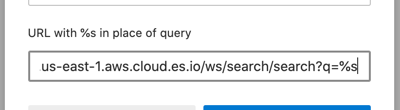

Searching Workplace Search from your web browser’s address baredit
Each Workplace Search deployment includes a web-based search application. You can search these Workplace Search applications the same way you search the web: directly from your browser’s address bar.
Review the instructions for your browser to add and search your Workplace Search applications:
Searching Workplace Search from the Chrome address baredit
To search a Workplace Search application from the Chrome address bar, first add the application as a Chrome search engine and assign it a keyword. You must complete this setup only once, after which you can search directly from the address bar using the assigned keyword.
These specific procedures vary by Chrome platform and version. The following examples are accurate for Google Chrome version 85.0.4183.102 (Official Build) (64-bit) on MacOS Catalina version 10.15.6 (19G2021).
Add a Workplace Search application as a Chrome search engineedit
Use Chrome’s search engine settings to add your Workplace Search application as a Chrome search engine and assign it a keyword.
-
Within Chrome, open chrome://settings/searchEngines.

-
Within Other search engines, choose Add,

which opens the Add search engine form.

-
Within Search engine, enter a name for the search engine.
Choose any name, but we recommend Workplace Search.

-
Within Keyword, enter a keyword to assign to this search engine.
Choose any word, but we recommend ws, an abbreviation for "Workplace Search". You’ll use this keyword to trigger the search engine from the address bar.

-
Within URL with %s in place of query, enter the following URL.
<WS_BASE_URL>/ws/search/search?q=%s
Substitute
<WS_BASE_URL>with the base URL at which Workplace Search is hosted (scheme + host, no path). For example:# Deployment using a custom domain name https://www.example.com/ws/search/search?q=%s # Deployment using a default Elastic Cloud domain name https://64c508d875bc457986d431dca55b997b.ent-search.us-east-1.aws.cloud.es.io/ws/search/search?q=%s # Unsecured local development environment http://localhost:3002/ws/search/search?q=%s

-
Choose Add,

which submits the form and displays your saved search engine.

After completing this one-time setup, you can search directly from the Chrome address bar.
Search a Workplace Search application from the Chrome address baredit
After adding a Workplace Search application as a Chrome search engine and assigning it a keyword, search the application directly from Chrome’s address bar using the assigned keyword.
-
Within the Chrome address bar, enter the keyword you assigned to the search engine.

-
Enter a whitespace character (e.g. press Tab or the space bar).
This triggers the custom search engine.

-
Enter your search terms.

-
Submit the request (e.g. press Enter or Return).
Chrome opens the search application to display the results.

If your login session has expired, the search application will prompt you to log in rather than display the search results. Log in, then search again.
Searching Workplace Search from the Safari address baredit
To search a Workplace Search application from the Safari address bar, first add the application as a Safari search engine. You must complete this setup only once.
Subsequently, search Workplace Search directly from the Safari address bar.
These specific procedures vary by Safari platform and version. The following examples are accurate for Apple Safari version 13.1.2 (15609.3.5.1.3) on MacOS Catalina version 10.15.6 (19G2021).
Add a Workplace Search application as a Safari search engineedit
Unlike other browsers, Safari doesn’t have an explicit process to add a search engine. Instead, the browser remembers which search applications you use and allows you to subsequently search them directly from its address bar.
Therefore, to add a Workplace Search application as a search engine, open the application and complete a search.
-
Within Safari, open the search application.

-
Complete a search.
Use any search terms. The terms won’t affect the result.

Safari automatically adds the application as a search engine, after which, you can search directly from the Safari address bar.
Search a Workplace Search application from the Safari address baredit
After adding a Workplace Search application as a Safari search engine, search the application directly from Safari’s address bar.
-
Within the Safari address bar, begin typing the web address of the Workplace Search application.
After you’ve typed enough of the address, Safari suggests the remainder.

-
Accept Safari’s suggestion (e.g. press Tab).
This triggers the custom search engine.

-
Enter your search terms.

-
Submit the request (e.g. press Enter or Return).
Safari opens the search application to display the results.

If your login session has expired, the search application will prompt you to log in rather than display the search results. Log in, then search again.
Searching Workplace Search from the Firefox address baredit
To search a Workplace Search application from the Firefox address bar, first add the application as a Firefox search engine, and optionally assign a keyword to the search engine. You must complete this setup only once.
Subsequently, search Workplace Search directly from the Firefox address bar using the search engine’s custom search button or its assigned keyword.
These specific procedures vary by Firefox platform and version. The following examples are accurate for Mozilla Firefox version 80.0.1 (64-bit) on MacOS Catalina version 10.15.6 (19G2021).
Add a Workplace Search application as a Firefox search engineedit
Use Firefox’s address bar menu to add your Workplace Search application as a Firefox search engine.
-
Within Firefox, open the Workplace Search application.

-
Open the address bar menu (e.g. click …).

-
Choose Add Search Engine.

After completing this one-time setup, you can search directly from the Firefox address bar using a custom button.
Optionally, assign a keyword to the search engine so you can also search by keyword.
Add a keyword to a Workplace Search Firefox search engineedit
After adding a Workplace Search application as a Firefox search engine, you may want to trigger the search engine by keyword. Use Firefox’s search preferences to add a keyword to the search engine.
-
Within Firefox, open about:preferences#search.

-
Scroll to One-Click Search Engines.

-
Within Elastic Workplace Search, focus (e.g. double-click) Keyword.

-
Enter a keyword to assign to this search engine.
Choose any word, but we recommend ws, an abbreviation for "Workplace Search".

-
Blur Keyword (e.g. press Tab, Enter, or Return) to save your changes.

After completing this one-time setup, you can search directly from the Firefox address bar using the keyword.
Search a Workplace Search application from the Firefox address bar using its custom buttonedit
After adding a Workplace Search application as a Firefox search engine, search the application directly from Firefox’s address bar using the search engine’s custom search button.
-
Within the Firefox address bar, enter your search terms.

-
Within This time, search with:, choose the button for the Workplace Search application.

Firefox opens the search application to display the results.

If your login session has expired, the search application will prompt you to log in rather than display the search results. Log in, then search again.
Alternatively, search the same application using its keyword.
Search a Workplace Search application from the Firefox address bar using its keywordedit
After adding a Workplace Search application as a Firefox search engine and assigning a keyword to the search engine, search the application directly from Firefox’s address bar using the search engine’s keyword.
-
Within the Firefox address bar, enter the keyword you assigned to the search engine.
This triggers the custom search engine.

-
Enter a space character, then your search terms.

-
Submit the request (e.g. press Enter or Return).
Firefox opens the search application to display the results.
If your login session has expired, the search application will prompt you to log in rather than display the search results. Log in, then search again.
Alternatively, search the same application using its custom search button.
Searching Workplace Search from the Edge address baredit
To search a Workplace Search application from the Edge address bar, first add the application as an Edge search engine and assign it a keyword. You must complete this setup only once, after which you can search directly from the address bar using the assigned keyword.
These specific procedures vary by Edge platform and version. The following examples are accurate for Microsoft Edge version 85.0.564.51 (Official build) (64-bit) on MacOS Catalina version 10.15.6 (19G2021).
Add a Workplace Search application as an Edge search engineedit
Use Edge’s search engine settings to add your Workplace Search application as an Edge search engine and assign it a keyword.
-
Within Edge, open edge://settings/searchEngines.

-
Within Address bar search engines, choose Add,

which opens the Add search engine form.

-
Within Search engine, enter a name for the search engine.
Choose any name, but we recommend Workplace Search.

-
Within Keyword, enter a keyword to assign to this search engine.
Choose any word, but we recommend ws, an abbreviation for "Workplace Search". You’ll use this keyword to trigger the search engine from the address bar.

-
Within URL with %s in place of query, enter the following URL.
<WS_BASE_URL>/ws/search/search?q=%s
Substitute
<WS_BASE_URL>with the base URL at which Workplace Search is hosted (scheme + host, no path). For example:# Deployment using a custom domain name https://www.example.com/ws/search/search?q=%s # Deployment using a default Elastic Cloud domain name https://64c508d875bc457986d431dca55b997b.ent-search.us-east-1.aws.cloud.es.io/ws/search/search?q=%s # Unsecured local development environment http://localhost:3002/ws/search/search?q=%s
 -
Choose Save,

which submits the form and displays your saved search engine.

After completing this one-time setup, you can search directly from the Edge address bar.
Search a Workplace Search application from the Edge address baredit
After adding a Workplace Search application as an Edge search engine and assigning it a keyword, search the application directly from Edge’s address bar using the assigned keyword.
-
Within the Edge address bar, enter the keyword you assigned to the search engine.

-
Enter a whitespace character (e.g. press Tab or the space bar).
This triggers the custom search engine.

-
Enter your search terms.

-
Submit the request (e.g. press Enter or Return).
Edge opens the search application to display the results.

If your login session has expired, the search application will prompt you to log in rather than display the search results. Log in, then search again.